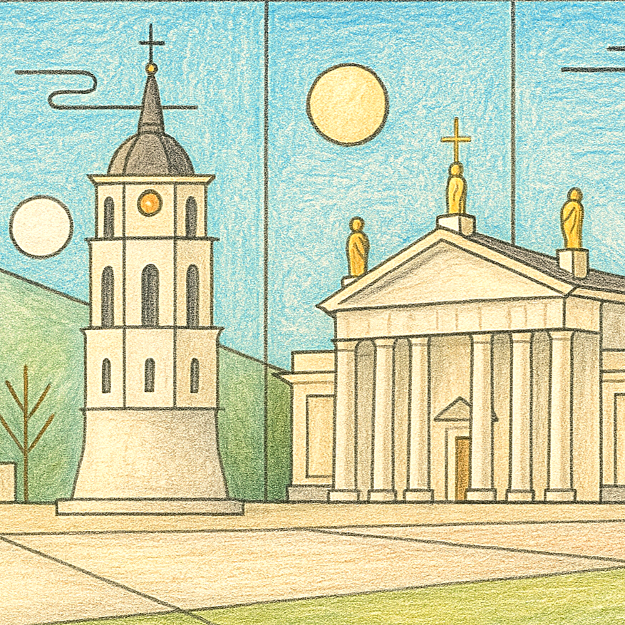
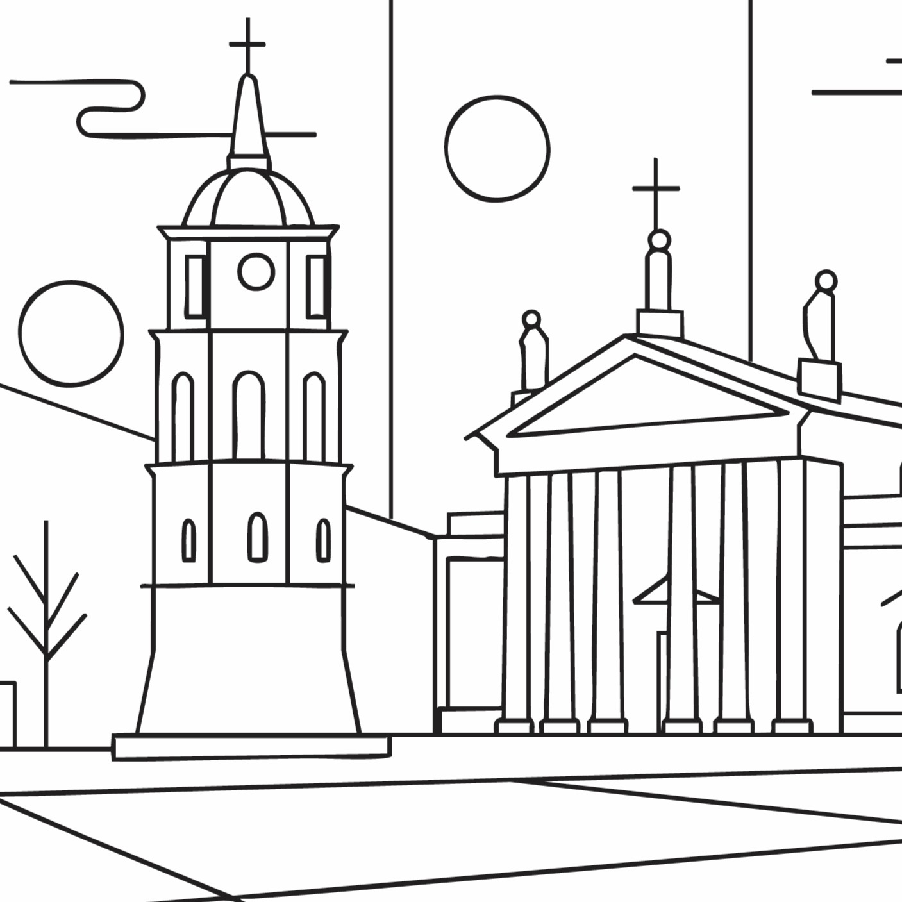

Gediminas Tower
One of the places or cultural icons featured in our Vilnius colouring book, Gediminas Tower is reimagined with clean geometric shapes and room for creative colour.
Discover the architecture, neighbourhoods and everyday icons of Vilnius through clean Bauhaus-inspired line illustrations, ready for your colours.
From Gediminas Tower to Lukiškės Prison, this edition explores the sights, local culture and visual character of Vilnius through a gallery of line illustrations.
Designed for adults who love travel, architecture and creative downtime, the pages use bold composition and open spaces for mindful colouring.
VIEW THE VILNIUS BOOK

PREVIEW: VILNIUS · LINE ART & COLOUR
Discover the places and details that inspired the illustrations in this edition.
One of the places or cultural icons featured in our Vilnius colouring book, Gediminas Tower is reimagined with clean geometric shapes and room for creative colour.
A cultural highlight in Vilnius, MO Museum brings art, architecture and creative life into this city-inspired colouring collection.
One of the places or cultural icons featured in our Vilnius colouring book, St. Anne’s Church is reimagined with clean geometric shapes and room for creative colour.
Pilies Street captures a piece of Vilnius street life, from its built environment to the small details that make a neighbourhood memorable.
One of the places or cultural icons featured in our Vilnius colouring book, Gates of Dawn is reimagined with clean geometric shapes and room for creative colour.
Cathedral Square captures a piece of Vilnius street life, from its built environment to the small details that make a neighbourhood memorable.
One of the places or cultural icons featured in our Vilnius colouring book, TV Tower is reimagined with clean geometric shapes and room for creative colour.
One of the places or cultural icons featured in our Vilnius colouring book, Šaltibarščiai is reimagined with clean geometric shapes and room for creative colour.
A cultural highlight in Vilnius, National Gallery of Art brings art, architecture and creative life into this city-inspired colouring collection.
Water, movement and the city meet at White Bridge, offering a distinctive scene to explore through geometric lines and colour.
One of the places or cultural icons featured in our Vilnius colouring book, Three Crosses Monument is reimagined with clean geometric shapes and room for creative colour.
One of the places or cultural icons featured in our Vilnius colouring book, Užupis is reimagined with clean geometric shapes and room for creative colour.
Bernardinai Garden brings nature and open space into the Vilnius story, translated into a relaxed, design-led colouring composition.
Hales Market adds a taste of local everyday culture to the Vilnius collection, with shapes and details ready for your own palette.
Part of the rhythm of getting around Vilnius, Trolleybus becomes a graphic study in lines, forms and everyday movement.
One of the places or cultural icons featured in our Vilnius colouring book, Vilnius University is reimagined with clean geometric shapes and room for creative colour.
One of the places or cultural icons featured in our Vilnius colouring book, Lukiškės Prison is reimagined with clean geometric shapes and room for creative colour.
Explore the Vilnius edition and the wider Page Craft Studio city colouring book collection.